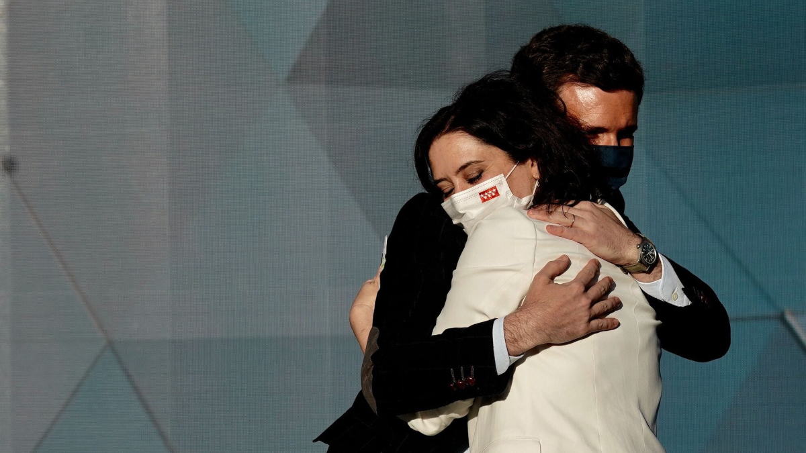
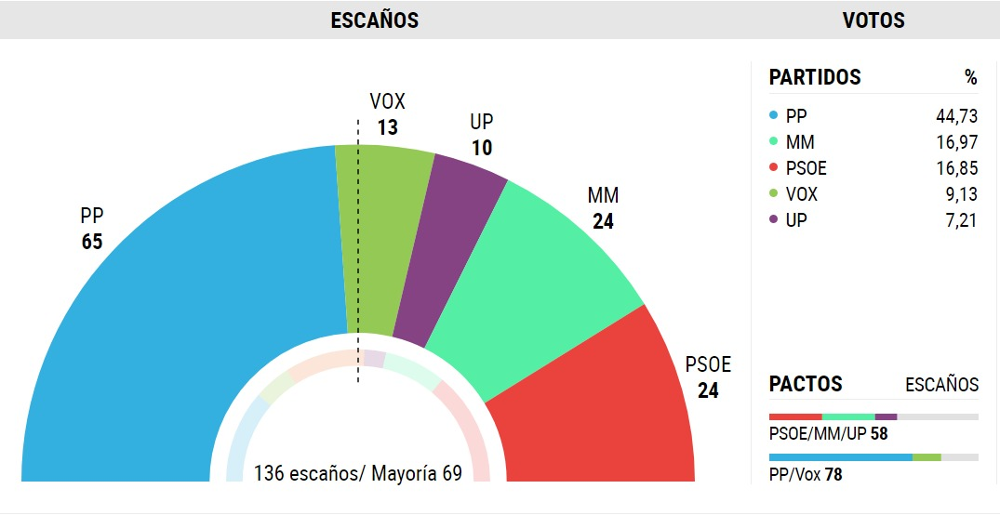

Isabel Díaz Ayuso vuelve a ganar las elecciones madrideñas
El PP liderado por Isabel Díaz Ayuso vuelve a ganar las elecciones madrideñas

Isabel Díaz Ayuso, con 65 escaños no consigue la mayoría absoluta a falta de 4, y deberá pactar con VOX para poder gobernar la Comunidad de Madrid.
